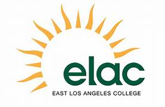

Resume
Download My ResumeEducation
My educational journey includes a robust foundation in systems and computer engineering, cloud computing, and Full Stack Development, with additional expertise in cybersecurity. I have earned diplomas, certificates, and degrees from esteemed institutions, demonstrating my commitment to acquiring diverse technical skills. Notably, I hold an Associate Degree for Transfer in Computer Science and have specialized in IPv6 network infrastructure and data centers. Additionally, I hold an engineering degree. These achievements reflect my dedication to academic excellence and continuous learning in the dynamic tech landscape.
Education Summary
| Year | Institution | Course/Certificate/Diploma |
|---|---|---|
| 2024 |  East Los Angeles College | Diploma: Cloud Computing (Amazon Web Services) |
| 2024 | Los Angeles City College, Los Angeles, CA | Diploma: Full Stack Web Developer |
| 2024 | East Los Angeles College | Degree: Associate Degree for Transfer in Computer Science |
| 2014 |
 Universidad Francisco Gavidia, El Salvador
Universidad Francisco Gavidia, El Salvador
|
Diploma: Supply Chain Management & Logistic |
| Aug 2011 - Aug 2012 | Universidad Tecnologica, El Salvador | Specialization: IPv6 Network Infrastructure and Data Centers |
| 2005 - 2011 | Universidad Tecnologica, El Salvador | Degree: Systems and Computer Engineering |
Technologies
I am proficient in a wide range of programming languages, development tools, and cloud services. My expertise includes Visual Basic.Net, C++, C#, Java, Python, PHP, HTML, CSS, JavaScript, and Bootstrap for web development. I am skilled in database management with MySQL and SQL Server.Net, and I utilize tools and IDEs such as Visual Studio.Net, Visual Studio Code, XAMPP, and jGRASP. Additionally, I leverage Amazon Web Services to build scalable and efficient cloud solutions. This diverse technical skill set allows me to tackle complex challenges and deliver innovative software solutions.
Technologies Summary
| Category | Technologies |
|---|---|
| Programming Languages | Visual Basic.Net, C++, C#, Java, Python, PHP |
| Web Development | HTML, CSS, JavaScript, Bootstrap |
| Databases | MySQL, SQL Server.Net, MySQL WorkBench |
| Tools & IDEs | Visual Studio.Net, Visual Studio Code, XAMPP, jGRASP, IDLE-Phyton 3.11 |
| Cloud Services | Amazon Web Services |
Experience
Driven by a passion for continuous learning and growth, I am actively seeking opportunities to gain hands-on experience in full-stack web development or as a software developer. With a solid foundation in computing and systems engineering, my expertise encompasses networking, databases, programming, cloud computing, and cybersecurity. My professional journey is defined by adaptability and a steadfast commitment to mastering new technologies. I am eager to apply my knowledge to real-world projects, collaborate with industry professionals, and contribute to innovative software solutions that effectively meet both user needs and business objectives.
Begin - Present
Position: Full Stack Web Developer
Company: [Company Name]
Location: Los Angeles, CA
As a motivated Programmer, I am actively pursuing a career as a Full Stack Web Developer or any other position in the software life cycle. My background as a Computing and Systems Engineer with a focus on networking, databases, programming, cloud computing, and cybersecurity equips me with a strong foundation in diverse technologies, including Visual Basic.Net, C++, C#.Net, Java, Python, PHP, HTML/CSS, Javascript, MySQL, SQL Server.Net, and Amazon Web Services. My education includes diplomas in Cloud Computing and Cybersecurity with hands-on experience in application development across various languages and environments, such as web and desktop development.